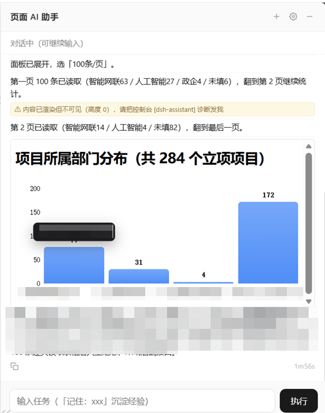
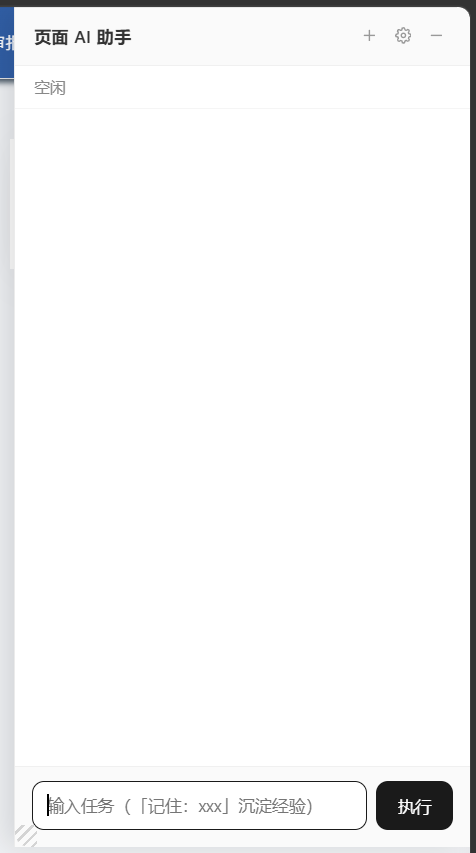

口令随扩展 zip 自动写入（零配置）；渲染与 DSH web UI 同源（markdown / 代码高亮 / 表格 / 公式 / GenUI 图表）。
档位在执行层硬拦截，越权工具调用直接拒绝；L4 才有模拟光标与点击特效，其余档位静默执行、人机可同时操作页面。
| 档位 | 名称 | 行为边界 |
|---|---|---|
| L1 | 仅问答 | 不触碰页面，纯问答；适合知识类问题，响应最快 |
| L2 | 当前页面只读 | 只读查看页面内容，禁止任何修改；适合「这个页面讲了什么」 |
| L3 | 页面操作 · 静默 | 开放页面操作工具，静默执行（默认推荐） |
| L4 | AI 操作演示 | 在 L3 基础上叠加模拟光标与点击特效，直观看到 AI 在做什么 |
| L5 | DSH 全量放开 | 开放 DSH 其他插件工具，能力上限最高 |
dsh plugin --profile web add git+<插件仓库地址>dsh web —— relay 随之启动，并自动生成本机口令。http://127.0.0.1:9916/ 下载扩展 zip 并解压 → edge://extensions 开「开发人员模式」→「加载解压缩的扩展」→ 点工具栏「页面 AI 助手」图标即用。无需 git / 无需 node / 不碰源码；口令与端点在下载时自动写入 zip，加载即用。
业务页面 header 加一行 script 即可挂载同款悬浮窗，用户零配置：
<script src="http://127.0.0.1:9916/dsh-assistant.min.js"
data-token="向导页复制的口令"
data-workspace="D:\工作区"
data-ai-level="L3"></script>支持经后端代理接入、data-* 属性注入默认档位与工作区、DshAssistant.mountPanel() 手动挂载；面板脚本由 relay 托管，relay 更新后刷新页面即拿到新版。